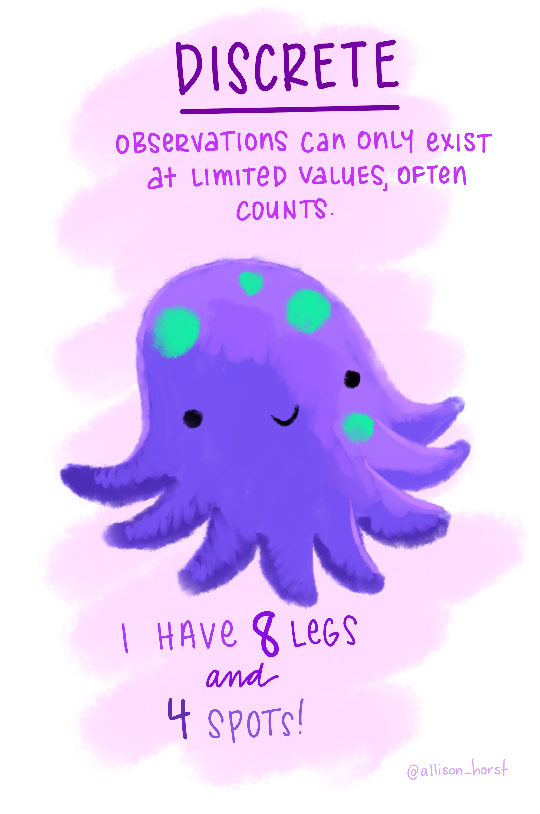
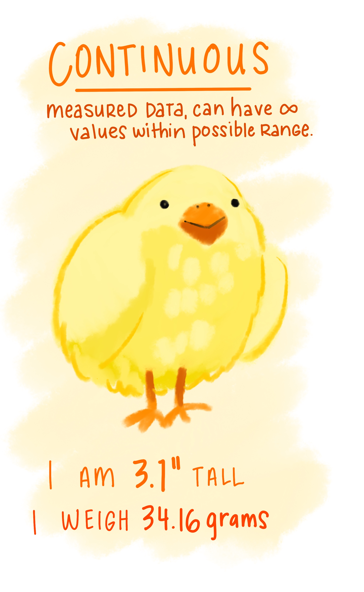

Foundational Concepts in
Statistical Research
Theory
“Theory is a well-established principle or set of general principles to explain a broad range of observations.”
Theory = Explanation
Theory
“normally scientists are interested in theories that apply very generally.”
Generalization
Population
The population is the complete set of all individuals, items, or observations that share a common characteristic and are of interest to the researcher.
It represents everyone or everything you want to draw conclusions about.
The population has fixed parameters like the true mean (μ) or standard deviation (σ), though these are often unknown and what we’re trying to estimate.
Population Examples
- All registered voters in a country (if studying voting behavior)
- Every student enrolled in a university (if studying student satisfaction)
- All hospitals in a region (if studying healthcare quality)
- The entire production line output for a year (if studying defect rates)
Sample
A sample is a subset of the population that’s actually observed or measured in the study.
Since studying entire populations is often impractical, expensive, or impossible, researchers select a representative group to study instead.
Samples have statistics like the sample mean (x̄) or sample standard deviation (s), which are used to estimate the population parameters.
Population vs Sample
| Population | Sample |
|---|---|
| All registered voters in a country | 1,500 randomly selected registered voters |
| Every student enrolled in a university | 300 students chosen from different departments |
| All hospitals in a region | 50 hospitals selected using stratified sampling |
| The entire production line output for a year | 500 randomly selected products from the production line |
Statistical Inference
The goal of most research is statistical inference: using sample statistics to make educated guesses about population parameters.
The quality of your sample determines how well you can generalize findings back to the population.
Hypothesis
A hypothesis is a testable statement or prediction about the relationship between variables in a population.
It’s essentially an educated guess based on theory, prior research, or observation that you’re trying to verify or refute using data from your sample.
How Hypothesis Connects to Population and Sample
Hypothesis is about the population: Your hypothesis makes a claim about the entire population (all students, all patients, etc.), even though you can’t study everyone.
Sample provides the evidence: You collect data from your sample to test whether the evidence supports or contradicts the null hypothesis.
Statistical inference bridges the gap: You use statistical tests to determine whether the patterns you observe in your sample are strong enough to conclude something about the population.
Variables
“Elements in the study that are measured or manipulated.”
Independent variable
Dependent variable
Statistical Learning
“Statistical Learning refers to a vast set of tools for understanding data.”
- Summarizes and organizes data to describe its main features.
- Limited to the observed data.
- Makes predictions or inferences about a population from a sample.
- Goes beyond the observed data to infer population characteristics.
Sampling Variation
These statistics vary from one sample to the next.

Sampling Error
These statistics sometimes differ from the population parameter.

Maths & Statistical Notation
Simple Maths
\[ 1 + 2\times3^2 \]
Answer: 19
BODMAS
Brackets
Order (Power)
Divide
Multiplication
Addition
Subtraction
What will be the answer to this?
\[ 10 + \frac{2(3+1)^2}{8} - 5 \]
\[ 10 + \frac{2\times16}{8} - 5 \]
Answer: 9
Let’s Understand this
\[ \sum_{i=1}^n x_i \]
Let’s Understand this
\[ \sum_{i=1}^n x_i \\ = 10 + 6 \\ = 16 \]
Let’s Try this
\[ \sum_{i=1}^n x^2_i \]
Let’s Try this
\[ \sum_{i=1}^n x^2_i \\ = 10^2 + 6^2 \\ = 100 + 36 \\ = 136 \]
Let’s Try this
\[ \left( \sum_{i=1}^n x_i \right )^2 \]
Let’s Try this
\[ \left( \sum_{i=1}^n x_i \right )^2 \\ = (10+6)^2 \\ = 16^2 \\ = 256 \]
Scales of measurement
Scales of measurement (also called levels of measurement) classify how variables are measured and what mathematical operations can be performed on them.
There are four main scales:
- Nominal scale.
- Ordinal scale.
- Interval scale.
- Ratio scale.
Nominal Scale
Categories with no inherent order or ranking.
Categories are different but not better/worse or higher/lower
Examples:
- Gender (male, female, non-binary)
- Blood type (A, B, AB, O)
- Marital status (single, married, divorced, widowed)
- Eye color (blue, brown, green, hazel)
- Type of car (sedan, SUV, truck)
Ordinal Scale
Categories with a meaningful order or ranking, but the intervals between ranks are not equal or known.
You can rank items from lowest to highest
Examples:
- Education level (high school, bachelor’s, master’s, doctorate)
- Satisfaction ratings (very dissatisfied, dissatisfied, neutral, satisfied, very satisfied)
- Socioeconomic status (lower class, middle class, upper class)
- Military ranks (private, corporal, sergeant, lieutenant)
- Pain scale (mild, moderate, severe)
Interval Scale
Ordered categories with equal intervals between values, but no true zero point.
Equal distances between consecutive values
Examples:
- Temperature in Celsius or Fahrenheit (0° doesn’t mean “no temperature”)
- IQ scores (an IQ of 0 doesn’t mean “no intelligence”)
- Standardized test scores (SAT, GRE)
Ratio Scale
Ordered categories with equal intervals AND a true/absolute zero point, where zero means complete absence of the quantity.
Examples:
- Height (0 cm = no height)
- Weight (0 kg = no weight)
- Age (0 years = just born)
- Income (0 dollars = no money)
- Number of children (0 = no children)
Discrete vs Continuous Variables

